📊Portfolio Tracker
Il mio tracker del portafoglio di investimenti che gira interamente nel browser. Registra le posizioni tra diversi broker, calcola profitti/perdite, dividendi, tasse e il valore equo delle azioni — e mostra come il portafoglio rende davvero nel tempo. Nessun account, nessun cloud, le mie posizioni non lasciano mai il dispositivo. 37 pagine in 5 moduli, 4.755 test automatici.
React TypeScript Vite Recharts localStorage (senza cloud) Python / pywebview (desktop) 4.755 test
Cosa fa
Ho un'app di contabilità che registra i soldi e un analista che consiglia sulle singole azioni. Portfolio Tracker è il terzo pezzo: traccia come rende l'intero portafoglio nel tempo — in un unico posto, senza accedere a nessun servizio. Ispirato a strumenti come Digrin, ma costruito in modo che le mie posizioni non vengano mai inviate fuori.
Le transazioni sono la fonte della verità. Invece di scrivere "ho 10 azioni", l'app conserva i singoli acquisti, vendite e dividendi — e ne deriva posizioni, prezzo medio e utile realizzato (FIFO). Così tasse e storico restano coerenti.
Legge gli estratti dei broker da sola. Trascino CSV / XLSX / PDF da XTB, eToro, Trading 212 o Interactive Brokers; l'app riconosce il broker, normalizza il formato e non duplica gli import ripetuti (un'impronta per transazione). I conti XTB si possono dividere per valuta (USD/EUR/CZK separati).
Tasse secondo le regole ceche. Abbinamento FIFO delle vendite, il test temporale di 3 anni (esenzione per detenzione lunga) e il test di valore § 4 (proventi dalle vendite ≤ 100 000 CZK/anno). Il riepilogo è sempre calcolato in CZK anche se il portafoglio è in USD (convertito al tasso storico alla data dell'operazione).
Performance e valore equo. XIRR, CAGR, TWR, volatilità, Sharpe, un grafico del valore nel tempo e i rendimenti mensili (anno × mese). Per ogni titolo ci sono 6 modelli di valutazione (DCF, Graham, Lynch, DDM, EV/EBITDA, Multipli), uno screener con un mio punteggio composito, una heatmap settoriale e un calendario degli utili.
Dati pubblici, chiavi solo da me. Prezzi in tempo reale da Yahoo Finance, fondamentali da SEC EDGAR e Finnhub, un analista AI opzionale tramite Gemini. Eventuali chiavi API restano localmente nel browser — mai nel codice né inviate fuori. Tutta l'app gira localmente; nessun server vede le mie posizioni.
Funzioni principali
- Posizioni, P/L e allocazione — panoramica del valore del portafoglio, utile non realizzato e realizzato, ripartizione per settore, tipo, posizione e valuta, avvisi di concentrazione.
- Import da 4 broker + API live — XTB, eToro, Trading 212, Interactive Brokers (CSV/XLSX/PDF); in più una connessione live a IBKR tramite Flex Web Service e l'API di Trading 212, con download automatico delle transazioni all'avvio (opzionale). Dedup idempotente, modello broker → conto → transazione, divisione XTB per valuta.
- Tasse ceche (FIFO) — test temporale di 3 anni e test di valore di 100 000 CZK, giorni rimanenti all'esenzione, raccolta delle minusvalenze (tax-loss harvesting, con distinzione tra parte deducibile ed esente per test temporale), export delle operazioni per la dichiarazione. Indicativo, non consulenza fiscale.
- Performance — XIRR, CAGR, TWR, volatilità, max drawdown, Sharpe, grafico del valore nel tempo con confronto contro S&P 500 / NASDAQ e rendimenti mensili (utile di capitale per mese).
- Dividendi — reddito annuo e rendimento per posizione, reddito effettivo per mese (TTM + confronto anno su anno) e un calendario dividendi con proiezione a 12 mesi.
- Mercato e notizie nell'app — notizie inline (portafoglio e intero mercato), Market Pulse (VIX, Fear & Greed, settori, maggiori movimenti) e un calendario macro di eventi economici — tutto da dati pubblici gratuiti, senza API a pagamento.
- Valore equo & screener — 6 modelli di valutazione, switch del modello, mio punteggio composito, Beta e consenso degli analisti (Finnhub), P/E e Fwd P/E.
- Heatmap, calendario, analista AI — una heatmap settoriale del portafoglio, un calendario degli utili e un analista AI (Gemini) sui dati del portafoglio — tutto chiaramente segnalato come non consulenza d'investimento.
- Bacheca e tela analitica — una composizione personale di schede prese dalle altre pagine e una tela di blocchi analitici commutabile per domanda ("Dove sono davvero i miei soldi?", "Quanto mi costa in commissioni?"). La disposizione resta solo nel browser e non tocca i dati del portafoglio.
- Salute del portafoglio e segnali — un punteggio composito su sette assi (diversificazione, valutazione, rischio, qualità, reddito, sentiment, fattori). Un asse senza dati non viene calcolato — esce dal punteggio con il motivo scritto accanto, così il risultato non sembra migliore di quanto i dati permettano.
- Controllo incrociato con il broker — per eToro l'app scarica il valore totale del conto tramite la loro API e lo confronta con il proprio calcolo; uno scarto oltre il 5% avvisa che probabilmente manca un estratto conto più recente. Un semaforo di copertura sorveglia l'età dell'ultimo estratto per ogni conto.
- Cambio per la dichiarazione dei redditi (§ 38 della legge ceca) — cambio giornaliero della banca centrale ceca oppure il cambio unificato pubblicato dal fisco, a scelta e documentato; l'app scarica le annate direttamente dalla banca centrale e segnala quando il cambio unificato dell'anno non è ancora stato pubblicato.
- Backup, istantanee e ripristino — backup JSON completo (facoltativamente con impostazioni e chiavi, oppure senza dati riservati per l'archivio), ripristino per sovrascrittura o unione, istantanee di sicurezza prima di ogni modifica automatica dei dati e una pagina Salute del sistema con la diagnostica.
- Diario d'investimento e obiettivi — note sulle decisioni per singolo titolo e obiettivi con proiezione; per un obiettivo l'app calcola il versamento mensile necessario, ma solo se inserisco io il rendimento atteso — mettere d'ufficio "il solito 8%" trasformerebbe un numero inventato in un piano.
- Senza account, senza cloud, 4.755 test — tutto in locale (localStorage), i dati non lasciano mai il dispositivo. Sotto il cofano 4.755 test automatici e un livello di verifica dei calcoli (valutazioni auto-controllate). Le correzioni le verifico per mutazione: se annullo temporaneamente la correzione, un test deve fallire, altrimenti non dimostra nulla.
Anteprime

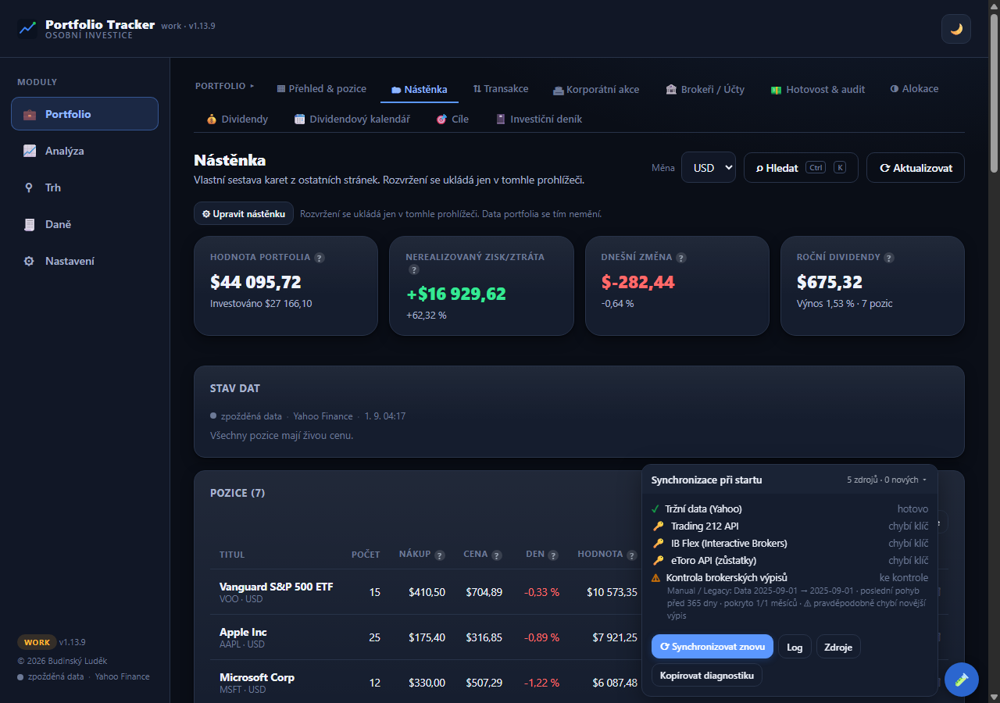
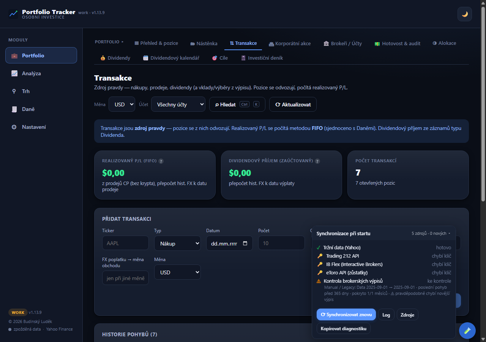
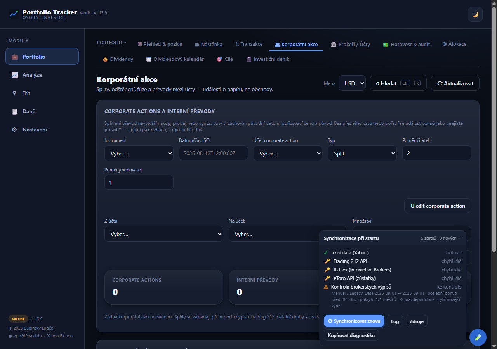
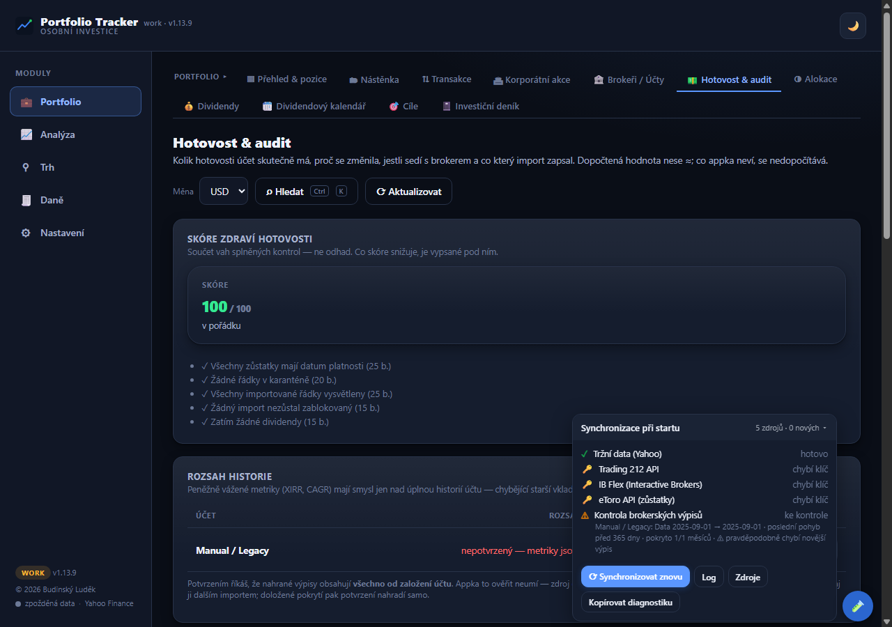
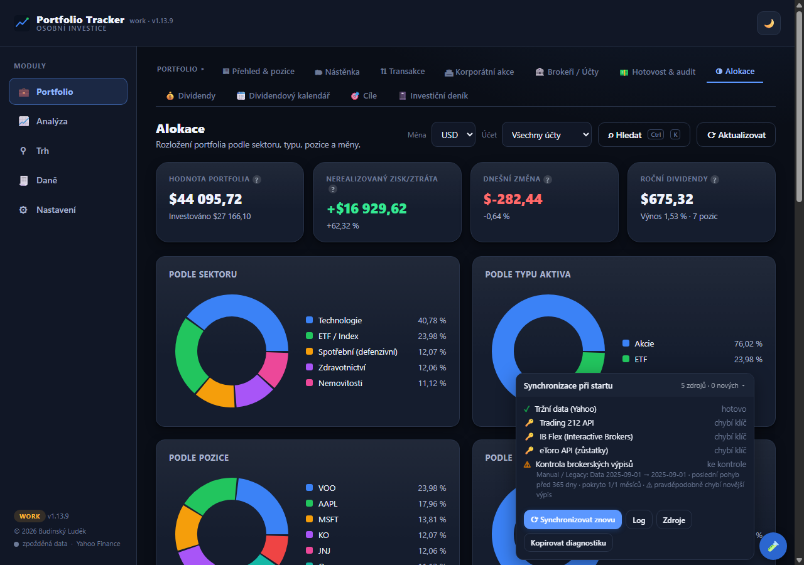
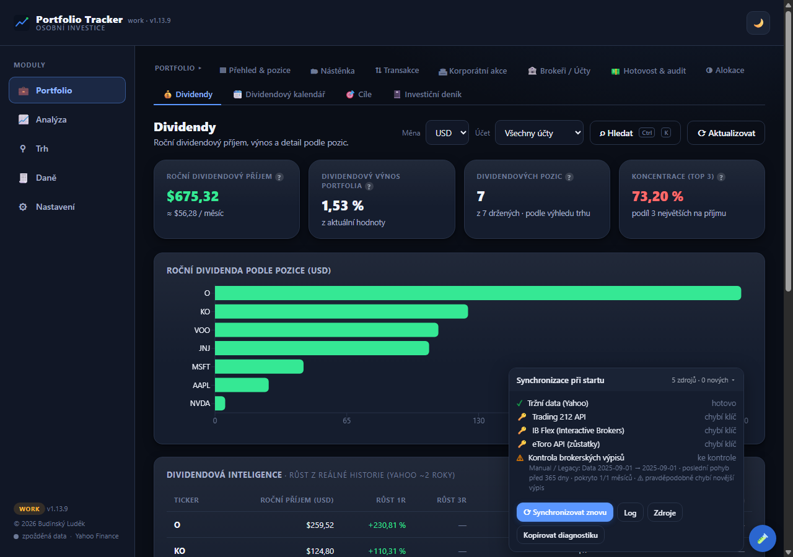
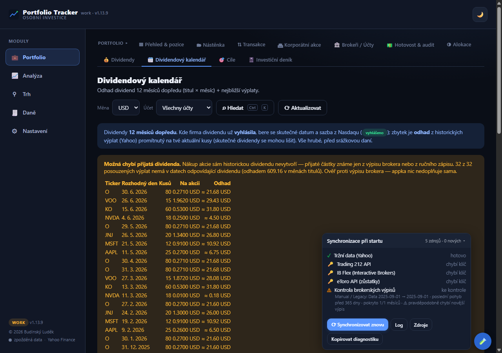
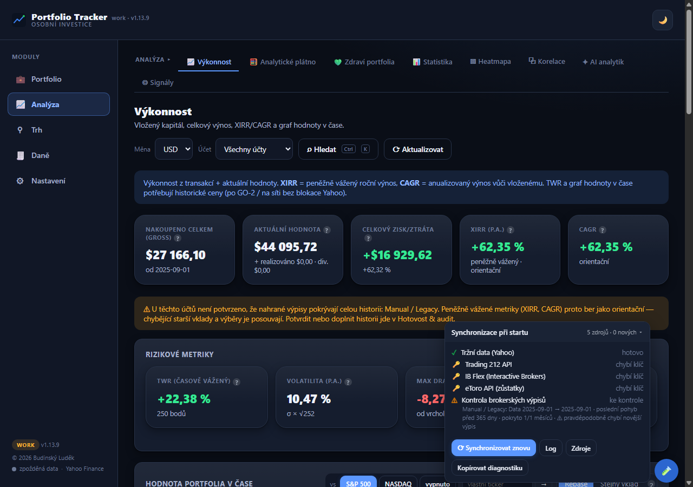
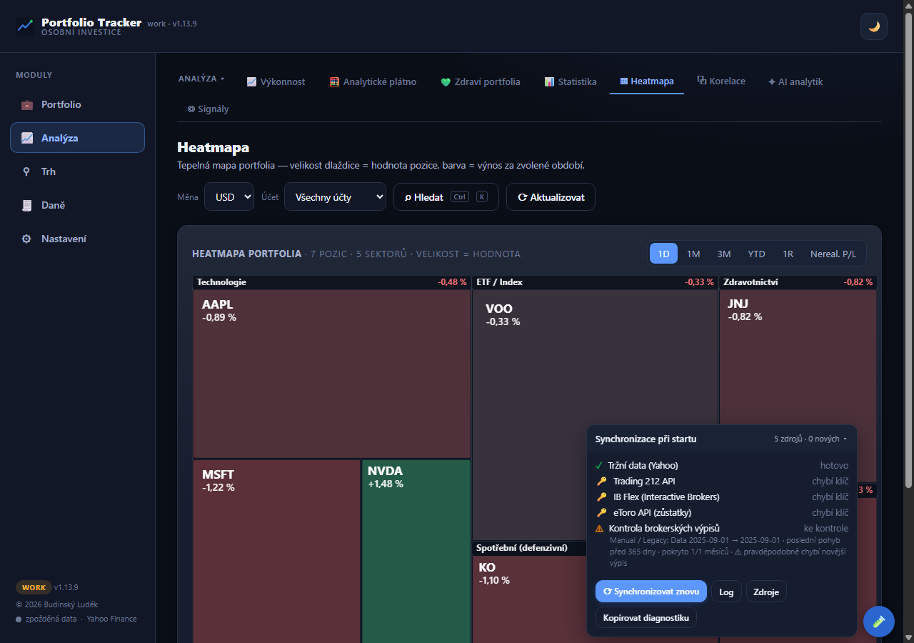
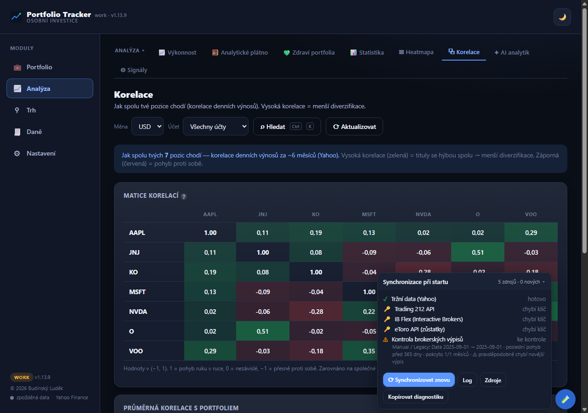
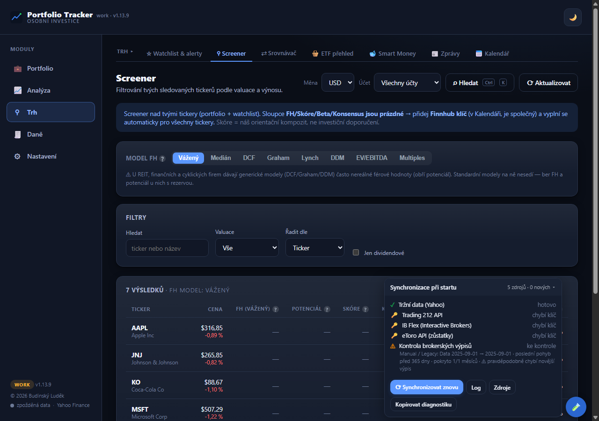
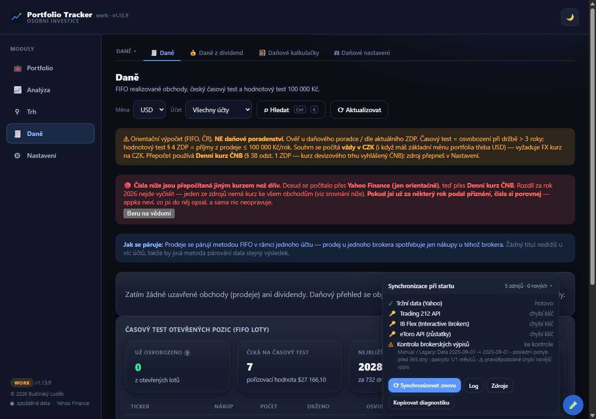
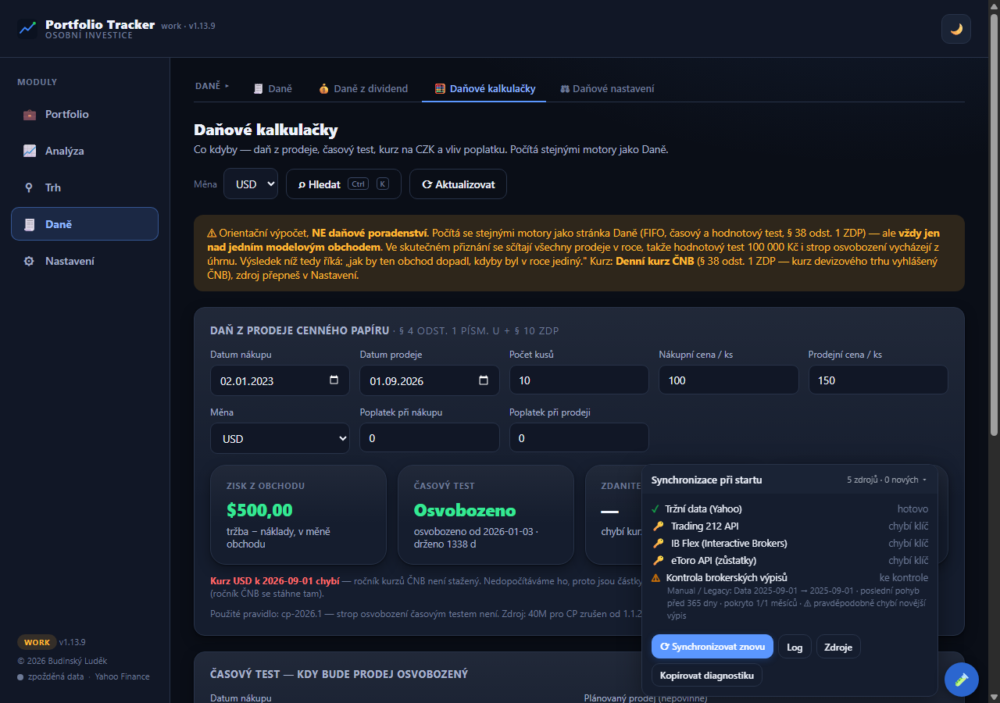
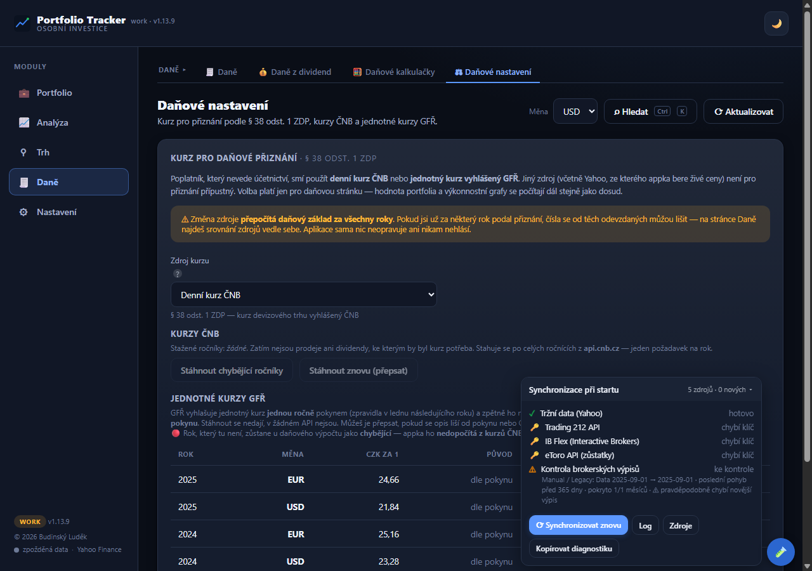
Le anteprime usano un portafoglio di esempio (demo) — posizioni reali e dati finanziari personali non vanno sul web.
Stato
Versione beta v1.13.9 (agosto 2026), 4.755 test automatici, 37 pagine in 5 moduli. App desktop locale completamente autonoma (React/Vite in una propria finestra tramite pywebview) con aggiornamento automatico silenzioso dal NAS di casa e installazione senza diritti di amministratore — gira solo sul mio PC. Privata, senza hosting pubblico e senza installer pubblico scaricabile — dati reali e informazioni personali non vanno mai sul web; le anteprime qui sopra usano un portafoglio di esempio. Non è consulenza d'investimento, solo uno strumento analitico e di registrazione per me.
Qualche numero sulla portata: 4 broker supportati, 3 API live in sola lettura (Trading 212, IB Flex, eToro), 6 modelli di valutazione, 7 assi di valutazione del portafoglio, cambi della banca centrale ceca e cambio unificato del fisco per la dichiarazione.